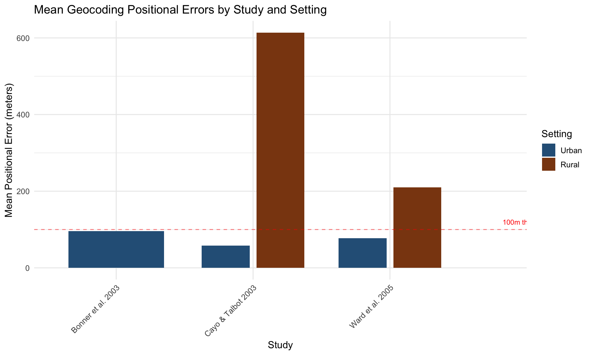

Code
error_data <- tibble(
Study = c("Bonner et al. 2003", "Cayo & Talbot 2003", "Cayo & Talbot 2003",
"Ward et al. 2005", "Ward et al. 2005"),
Setting = c("Urban", "Urban", "Rural", "Urban", "Rural"),
Mean_Error_m = c(96, 58, 614, 77, 210)
) %>%
mutate(Setting = factor(Setting, levels = c("Urban", "Rural")))
ggplot(error_data, aes(x = Study, y = Mean_Error_m, fill = Setting)) +
geom_col(position = position_dodge(0.8), width = 0.7) +
scale_fill_manual(values = c("Urban" = "#2C5F87", "Rural" = "#8B4513")) +
labs(
title = "Mean Geocoding Positional Errors by Study and Setting",
x = "Study",
y = "Mean Positional Error (meters)",
fill = "Setting"
) +
theme(axis.text.x = element_text(angle = 45, hjust = 1)) +
geom_hline(yintercept = 100, linetype = "dashed", color = "red", alpha = 0.5) +
annotate("text", x = 4, y = 120, label = "100m threshold",
color = "red", size = 3)